WINDOWS 10
INTRODUCCIÓN
Windows 10 es el sistema operativo de Microsoft más usado por los usuarios de ordenadores personales. Su lanzamiento fue en julio de 2015. En el presente documento se hablará sobre este mismo sistema y las novedades que trajo con su lanzamiento.
INFORMACIÓN
¿Qué es Windows 10?
Windows 10 es un sistema operativo desarrollado por Microsoft como parte de la familia de sistemas operativos Windows NT. Fue dado a conocer oficialmente en septiembre de 2014, seguido por una breve presentación de demostración en la conferencia Build 2014. Entró en fase beta de prueba en octubre de 2014 y fue lanzado al público en general el 29 de julio de 2015.
CAMBIOS DE ESTA VERSIÓN
La conexión entre varios dispositivos
Se facilita con Windows 10, el cual puede ser instalado en distintos equipos para brindar una experiencia uniforme del sistema operativo en celulares, tabletas u otros dispositivos compatibles. Dependiendo del dispositivo en cuestión, Windows 10 adaptará su diseño para garantizar una experiencia de uso fluida y accesible.
Ventana de Inicio
En Windows 10 regresa el tradicional menú de Inicio que desapareció en la versión anterior. Aquí se combina la pantalla de Inicio con las placas de Windows 8 y el tradicional menú de Inicio de Windows 7 y sistemas operativos anteriores a este.
Aplicaciones para todos los dispositivos
Esta versión del sistema operativo de Microsoft cuenta con algunas aplicaciones diseñadas para que se adapten a cualquier dispositivo: computadores, celulares, tabletas o Xbox One. Estas aplicaciones se adaptan a cada equipo y le muestran al usuario una interfaz fácil de manejar. Pueden cambiar si el dispositivo tiene o no teclado y se ajustan a diferentes tamaños de pantalla.
Centro de notificaciones
Como en los dispositivos móviles, Windows 10 trae un centro de notificaciones y acciones en la parte derecha de la pantalla desde donde podrás activar o desactivar herramientas como el wifi, el VPN (tecnología para conectar uno o más computadores a una red privada), el modo avión, el Bluetooth, entre otras. Además, allí verás las notificaciones de lo que está pasando en tu equipo.
Cortana
Windows 10 trae una característica muy importante: Cortana, su asistente virtual, el cual controlas a través de comandos de voz. Puedes pedirle información sobre el clima, sobre tus vuelos, hacer búsquedas en internet o dentro de tu equipo, entre otras cosas.
Microsoft Edge
Trae algunas novedades como filtros de seguridad para proteger descargas, se pueden escribir textos en las páginas de internet e intenta predecir qué página vas a abrir después de la que estás visitando para que su carga sea más rápida.
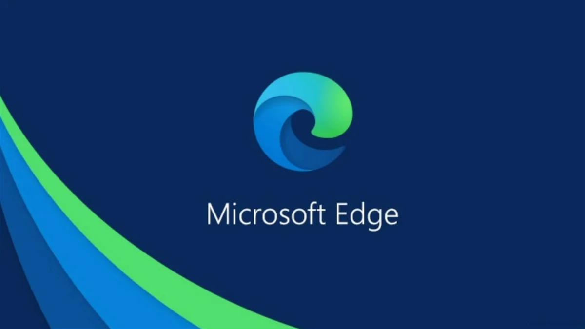Menu inicio
En Windows 10 regresa el tradicional menú de inicio. A diferencia de Windows 8 que desplegaba la Pantalla de inicio, en esta versión se combina el menú de inicio de versiones como Windows 7 o Vista con las baldosas que encontramos en Windows 8.
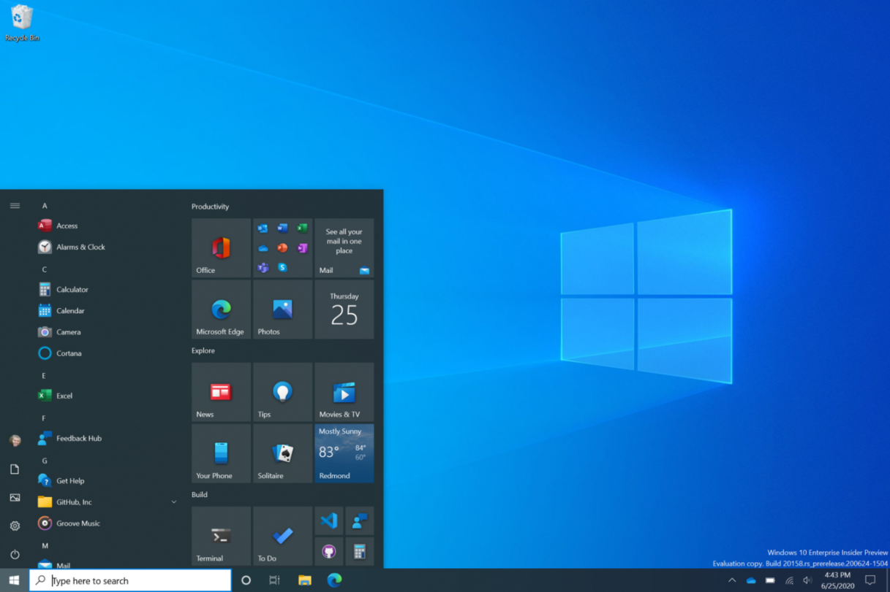Actualizaciones automáticas
A diferencia de otras versiones de Windows donde tú elegías cuándo hacer las actualizaciones en el dispositivo, en Windows 10 estas se hacen de forma automática. En esta versión se descargarán las actualizaciones en el sistema a medida que Microsoft así lo requiera.
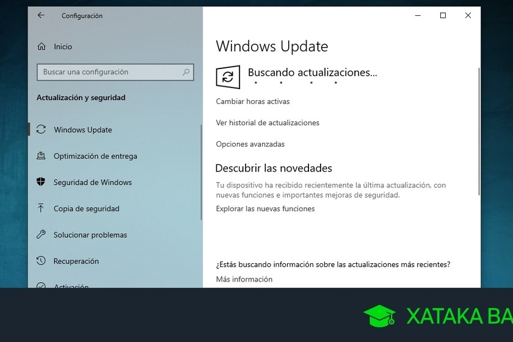Multiescritorios
: Quizás uno de los cambios más esperados que trae Windows 10 es la posibilidad de crear varios escritorios virtuales para que puedas organizar más fácil todos los programas o ventanas que tengas abiertas en tu dispositivo

Vista de tareas
Windows 10 te permitirá ubicarlos más fácil gracias a su herramienta de vista de tareas, donde verás en miniatura todo lo que tienes abierto en ese momento.

REQUISITOS DEL SISTEMA OPERATIVO
Procesador
Procesador compatible a 1 GHz o más rápido o sistema en un chip (SoC)
RAM
1 gigabyte (GB) para 32 bits o 2 GB para 64 bits
Tamaño de disco duro
16 GB para SO de 32 bits; 32 GB para SO de 64 bits
Tarjeta gráfica
Compatible con DirectX 9 o posterior con controlador WDDM 1.0
Pantalla
800x600
Conexión a Internet
Para realizar las actualizaciones y descargar y aprovechar algunas características se requiere conexión a Internet. Windows 10 Pro en modo S, Windows 10 Pro Education en modo S, Windows 10 Education en modo S y Windows 10 Enterprise en modo S requieren una conexión a Internet durante la configuración inicial del dispositivo (OOBE) así como una cuenta de Microsoft (MSA) o una cuenta de Azure Activity Directory (AAD). El cambio fuera de Windows 10 en modo S también requiere conexión a Internet.
SEGURIDAD DEL SISTEMA OPERATIVO.
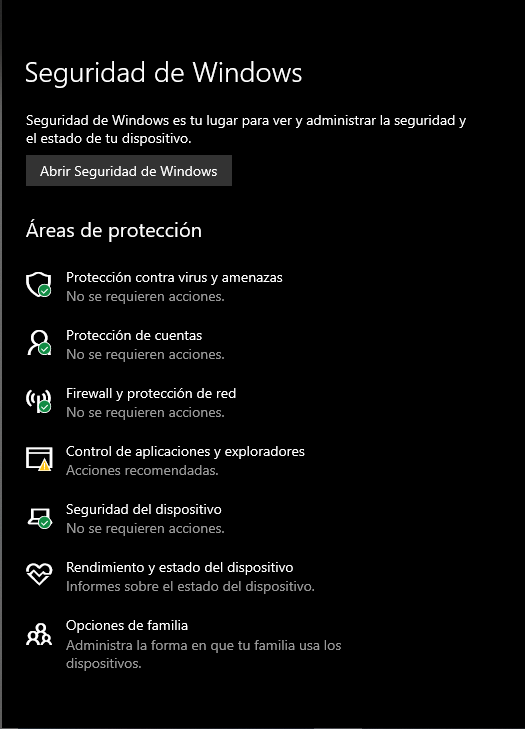La seguridad de Windows 10 es uno de los factores importantes a la hora de instalar un sistema operativo. Algunas características con las que cuenta este sistema son las siguientes:
Seguridad de Windows
Windows 10 y 11 incluyen Seguridad de Windows, que proporciona la protección antivirus más reciente. Desde el momento en que se inicia Windows, el dispositivo estará automáticamente protegido. Este apartado examina continuamente el dispositivo en busca de malware, virus y amenazas de seguridad, además de mantener siempre actualizado el dispositivo para mantenerlo seguro.
Protección contra amenazas y virus
Supervisa las amenazas del dispositivo, ejecuta análisis y obtiene actualizaciones para ayudar a detectar las últimas amenazas.
Protección de cuenta
Accede a las opciones de inicio de sesión y de configuración de cuenta, incluido Windows Hello y el bloqueo dinámico.
Protección de red y firewall
Administra la configuración del firewall y supervisa lo que sucede con las redes y las conexiones a Internet.
Control de aplicaciones y explorador
Actualiza la configuración de SmartScreen de Microsoft Defender para proteger el dispositivo contra aplicaciones, archivos, sitios y descargas potencialmente peligrosos. Se tendrá protección contra vulnerabilidades y se podrá personalizar la configuración de protección de los dispositivos.
Seguridad del dispositivo
Revisa las opciones de seguridad integrada que ayudan a proteger tu dispositivo contra ataques de software malintencionado.
Rendimiento y estado del dispositivo
Consulta la información del estado del rendimiento del dispositivo y mantenlo limpio y actualizado con la última versión de Windows.
Opciones de familia
Realiza un seguimiento de la actividad de tus hijos en línea y de los dispositivos de tu hogar.
Personalizar la protección del dispositivo
Para personalizar cómo se protege el dispositivo con estas características de Seguridad de Windows, selecciona Inicio > Configuración > Actualización y seguridad > Seguridad de Windows o seleccionando el botón siguiente.
Iconos de estado
Los iconos de estado indican el nivel de seguridad:
- Verde significa que no hay ninguna acción recomendada en este momento.
- Amarillo significa que hay una recomendación de seguridad para el usuario.
- Rojo advierte que algo necesita la atención inmediata del usuario.
Programar tu propio examen
Aunque Seguridad de Windows analiza periódicamente tu dispositivo para mantenerlo protegido, también puedes establecer cuándo y con qué frecuencia se realizarán los análisis.
Activar o desactivar la protección en tiempo real del Antivirus de Microsoft Defender
A veces es posible que tengas que dejar de ejecutar brevemente la protección en tiempo real. Mientras la protección en tiempo real esté desactivada, no se analizarán en busca de amenazas los archivos que abras ni los que descargues. Sin embargo, la protección en tiempo real pronto se activará automáticamente para proteger el dispositivo.
Proceso de Instalación


Nos dirigimos a la pestaña de “System configuration”, Cambiamos el idioma a español y nos ubicamos en la opción de “Opciones de arranque”.
 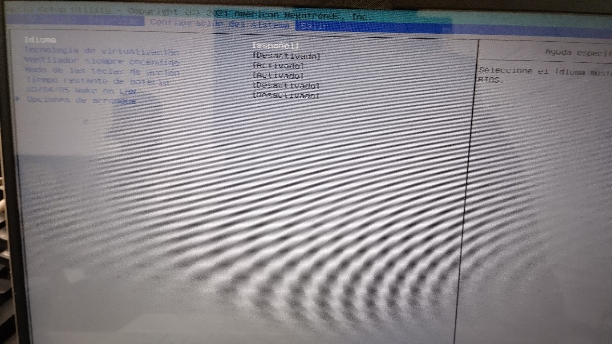
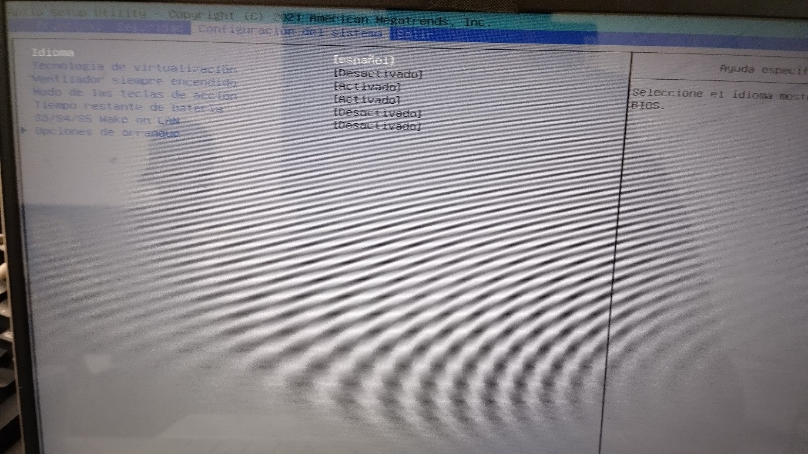
Dentro de esta opción nos dirigimos a la opción de “Orden de arranque UEFI” y le damos prioridad poniendo al inicio de la lista la opción de “Disquete USB en clave / unidad de disco duro
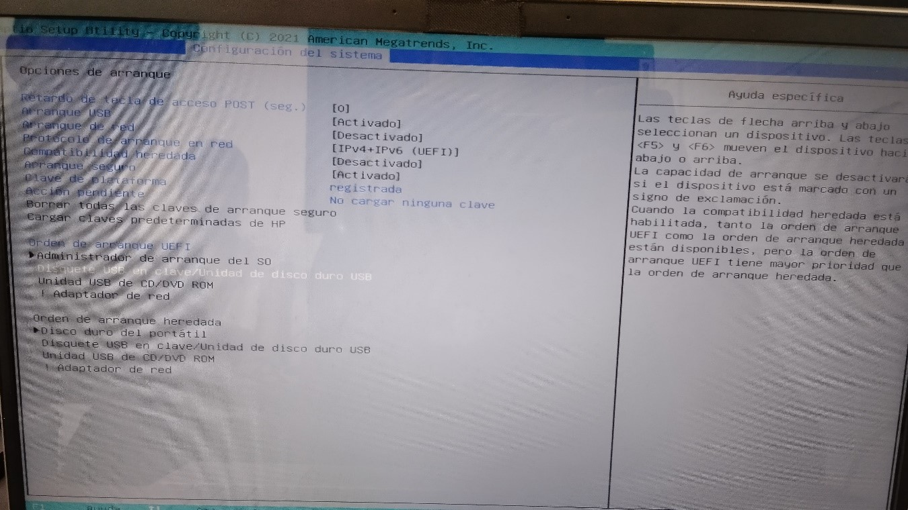Para este punto ya se tendría que tener la memoria usb con el sistema operativo ya instaladaloy colocarla en el dispositivo, y una ves ya conectada solo tendremos que dar “f10” para guardar los cambios hechos en el bios y comenzar la instalación
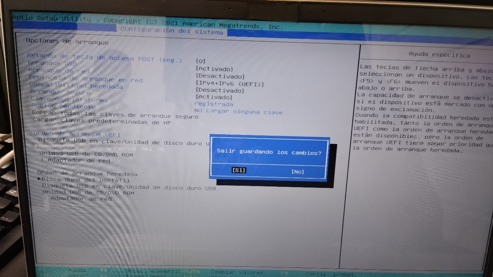2-INSTALACION DE SISTEMA OPERATIVO WINDOWS 10
Si se hicieron bien los pasos anteriores, lo primero que se tendría que ver seria la siguiente ventana donde se elegirá el idioma, la hora y la región y la distribución de el teclado del dispositivo. Una vez que se selecciono le damos a el botón de siguiente.
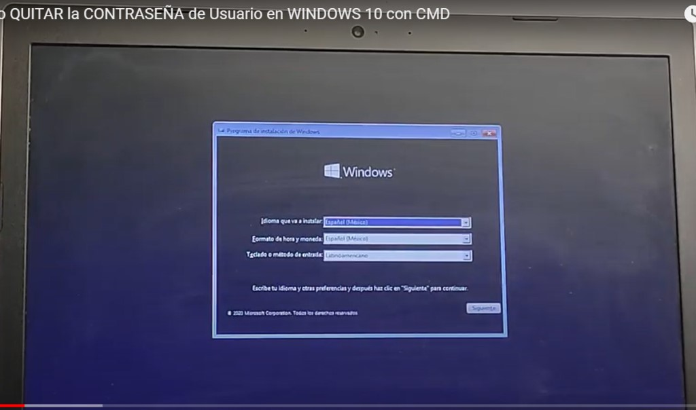Seleccionamos la opcionde instalar ahora.
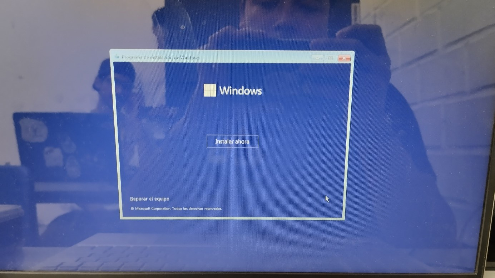Aceptamos los términos de la licencia y damos a siguiente.
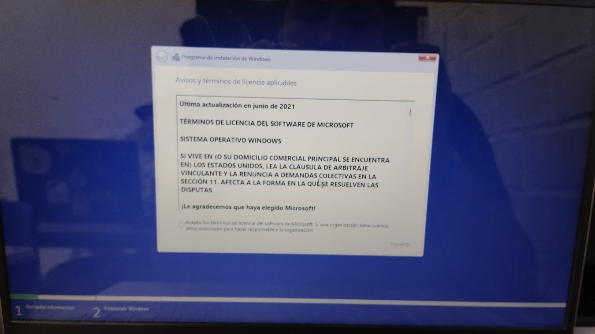 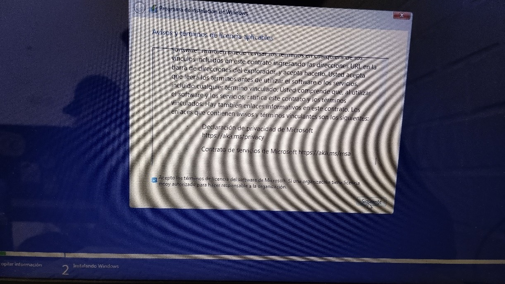Elegimos el tipo de instalación, en este caso personalizada ya que será una instalación limpia del sistema.

Seleccionamos la partición donde lo vamos a instalar y damos a siguiente

Si se hiso bien, tendrían que aparecer las siguientes ventanas ya que comenzó la instalación.
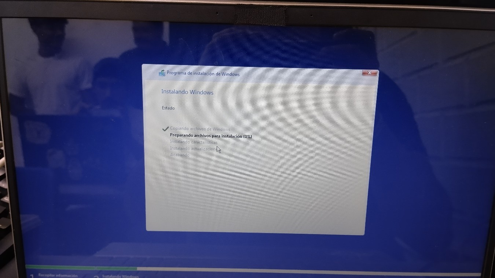
Versión del Sistema Operativo
Windows 10 Home
Es la edición básica original orientada a PCs de sobremesa y portátiles, tabletas y convertibles, e incluye todas las características orientadas al usuario final convencional para este tipo de equipos.
En ella se incluyen Cortana, el navegador Microsoft Edge, el soporte del modo tableta y de la tecnología biométrica Windows Hello. Se incluyen diversas aplicaciones nativas como la de Correo, Fotos, Mapas, Calendario o Música y Vídeo, y contamos también con opciones específicas para aquellos usuarios que disfrutan de los juegos con la Game Bar como protagonista.

Windows 10 Pro
Como en el caso anterior, esta edición está orientada a esos mismos tipos de dispositivo pero además de integrar todo lo que ya tiene la versión Home se añaden diversas opciones específicas para profesionales y PYMES.
Entre otras mejoras se tiene soporte para unir equipos a un dominio de trabajo, para contar con el soporte de la gestión de políticas de grupo o para poder usar la tecnología Bitlocker y el Escritorio Remoto. Las actualizaciones también son más frecuentes y se aplican tecnologías como Device Guard, que permiten a las empresas asegurar sus dispositivos contra amenazas externas de forma más potente.
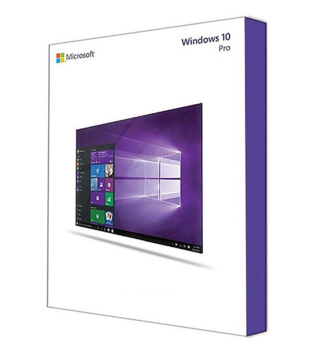Windows 10 Enterprise
Un paso más allá en el caso de usuarios profesionales tenemos la edición Enterprise, que va dirigida a compañías de mayor tamaño y que sobre todo añade capacidades en la protección de esos equipos empresariales y de los datos que se manejan en ellos.
Solo se puede acceder a esta edición a través del programa Volume Licensing de Microsoft, y entre las características más destacadas está el llamado DirectAccess, que permite a usuarios remotos acceder a una red interna a través de un sistema similar a una VPN. También tenemos AppLocker, que permite a los administradores restringir ciertas aplicaciones en ciertos dispositivos, algo importante para trabajadores con mucha movilidad.
Windows 10 Education
Ese nombre podría confundirnos, porque aunque esta edición está orientada efectivamente a entornos educativos, no es para alumnos, sino para las plantillas que conforman esas organizaciones académicas.
De hecho la base es la de Windows 10 Enterprise, así que contamos también con tecnologías como AppLocker, Device Guard o DirectAccess, y como en esa edición el acceso a esta edición de Windows 10 se restringe al programa de licencias por volumen de Microsoft. Una diferencia singular con las versiones anteriores: Cortana está deshabilitada en esta edición según la compilación de Windows 10 utilizada.
Windows 10 Pro Education
Pequeña edición "avanzada" de la anterior que se lanzó en julio de 2016 para fabricantes de hardware que podían disfrutar de licencias especiales para la educación primaria y secundaria en países como Estados Unidos o Australia (conocida como "K-12").
La diferencia fundammental fue la capacidad de provisionamiento ofrecida mediante la aplicación "Set Up School PCs" que permite instalar el sistema operativo y ciertas preferencias comunes a un entorno educativo/académico mediante una unidad USB. No incluye ni Cortana, ni las sugerencias de la tienda de Windows ni Windows Spotlight.
Windows 10 Enterprise LTSB
Otra versión especializada, en este caso directamente derivada de la edición Enterprise, y que se diferencia de esta última en el soporte a largo plazo (long-term support).
Estas ediciones con planes de soporte extendidos se publican cada dos o tres años y lo más interesante es que garantizan 10 años de soporte con actualizaciones de seguridad tras su lanzamiento, aunque después (de forma intencionada) no vuelven a recibir actualizaciones de seguridad. Algunas aplicaciones nativas de Windows y la tienda de aplicaciones Windows Store no se incluyen en esta edición.
Windows 10 Mobile
La edición de Windows 10 orientada a smartphones y pequeñas tabletas no está teniendo (de momento) el éxito que se esperaba, pero sigue siendo una de las variantes más llamativas de este sistema operativo.
En esta edición se incluyen todas las opciones orientadas a usuarios finales de estos dispositivos, incluyendo la tecnología Continuum o la versión móvil (y táctil) de Office.
Windows 10 Mobile Enterprise
Tenemos también variante empresarial para la plataforma móvil de Microsoft, que al igual que ocurría con la diferenciación entre la versión para usuarios finales y empresariales de Windows 10 para equipos de escritorio, llega con características específicas para esos usuarios de móviles empresariales.
También se obtiene mediante licencias de volumen, y entre las diferencias más importantes están el control y gestión de las actualizaciones y el control de la telemetría. La gestión de "flotas" de dispositivos empresariales y algunas mejoras en características de seguridad están también entre esas diferencias.
Windows 10 IoT
El sucesor natural de lo que en su día fue la rama Windows Embedded está pensada para esa nueva oleada de soluciones en la Internet de las Cosas y de hecho tiene tres sub-ediciones: IoT Core, IoT Enterprise e IoT Mobile Enterprise.
La versión Enterprise está más orientada a soluciones integradas en empresas de producción de todo tipo de productos, y aquí Microsoft hace tiempo que invita a cualquier desarrollador a descargar libremente estas versiones (que no incluyen un escritorio Windows 10 como tal) para trabajar con ellas y con todo tipo de soluciones IoT.
Windows 10 S
Una de las ediciones más polémicas de este sistema operativo ha sido Windows 10 S, la apuesta por la nube y la educación de Microsoft para competir con las prestaciones de plataformas como Chrome OS.
El resultado es una variante de Windows 10 que nos restringe la instalación de aplicaciones a la tienda de Windows y que con ello busca una mayor seguridad y control. Aunque la idea es interesante, el estado de la tienda de aplicaciones de Microsoft hace que por el momento esta edición haya tenido un frío recibimiento en el mercado.
Esta versión ha acabado desapareciendo: Microsoft anunció en marzo de 2018 que esta edición pasaría a ser el "Modo S" en todas las ediciones de Windows 10, un cambio que se hará efectivo en 2019.
Windows 10 Team
Microsoft lanzó al mercado sus singulares Surface Hub, los televisores inteligentes con una versión muy especial de Windows 10 que estaba orientada a salas de conferencias. Esa versión es una adaptación de Windows 10 Enterprise.
Entre las diferencias está el uso de una interfaz táctil, la presencia de una pantalla de bienvenida que sustituye a la pantalla de bloqueo además de aplicaciones especializadas como la pizarra (Whiteboard) o, por supuesto, Skype for Business, además de otras adaptadas como el explorador de ficheros o la herramienta de Configuración, con ciertos apartados específicos a este dispositivo.
Windows 10 Pro for Workstations
La última de las ediciones disponibles de Windows 10 ha sido creada para los usuarios de estaciones de trabajo y servidores con especificaciones hardware más avanzadas y ambiciosas.
Entre esas mejoras está la integración de un sistema de ficheros llamado Resilient File System (ReFS) especializado para grandes volúmenes de datos, el soporte de memoria persistente (módulos NVDIMM-N), mejores transferencias en carpetas compartidas con SMB Direct y soporte para configuraciones hardware especializadas con micros Intel Xeon y AMD Opteron con hasta cuatro CPUs (el límite eran dos anteriormente) y hasta 6 TB de memoria (el límite era 2 TB).
CONCLUSION
Microsoft trajo a Windows 10 como una evolución significativa para el sistema operativo ya que tiene un diseño simple aparte de ser bastante versátil ya que no solo es usado en dispositivos como pc sino también apartados móviles aunque no fueron muy populares. Trajo una mejora significativa a su antecesor añadiendo funciones útiles e innovadoras como Cortana y la actualización de su navegador. Sin duda este sistema operativo es uno de los mejores que a sacado la empresa y que perdurara para muchos usuarios.